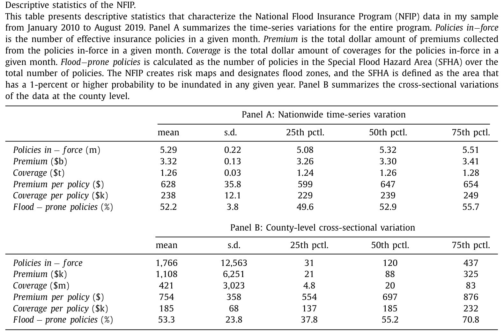
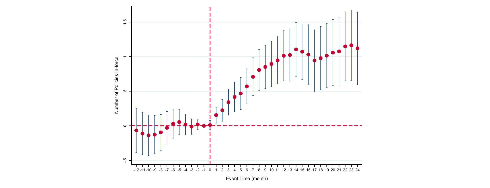
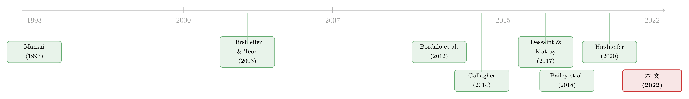

远方朋友的一场洪水，如何让你买下了保险
本文读的是 Hu (2022, Journal of Financial Economics)：当一个家庭在地理上遥远的朋友——比如住在波士顿的同学——经历了一场洪水，或被卷入一场洪水保险的宣传活动，这个家庭自己购买洪水保险的概率会上升 1%–5%。由于远方朋友的遭遇与本地的洪水风险毫无关系，这个上升只能来自「社会互动」本身。作者由此提供了第一个干净的因果证据：人们买不买灾害保险，要看朋友圈里发生了什么。
1 一个让政策制定者头疼的谜题
先说一个数字。
洪水是美国家庭面对的最昂贵的自然灾害——仅 2010 年代，洪水相关事件就造成了 $658 billion 的损失，远远超过其他任何一种灾害。为了让家庭去买洪水保险对冲这种尾部风险，美国政府已经花掉了 $36.5 billion 的补贴。
然而结果呢？根据 Insurance Information Institute 2016 年的调查，只有 12% 的美国家庭买了洪水保险；即便在洪水高发区，投保率也只有约 30%（Kousky et al., 2018）。最刺眼的一个事实是：被飓风 Harvey 和 Sandy 淹掉的房子里，投保的不到 20%。
补贴砸下去了，保险却没人买。这就是困扰政策制定者多年的低投保率之谜。要解开它，第一步是搞清楚：到底是什么在左右一个家庭买不买保险？
在经典的经济学与金融学模型里，个体是在一个「社会真空」里做决策的——他们彼此之间只通过市场价格这种非人格化的方式发生联系。但近年来一批理论与实证工作（Shiller, 2017; 2020; Hirshleifer, 2020）都在说同一件事：社会互动会塑造经济结果。那么，一个自然的问题是：保险这种典型的「个人风险决策」，会不会也被朋友影响？
2 识别一个同伴效应有多难
这个问题听上去简单，做起来却步步是坑。要识别社会互动 (social interactions) 对保险需求的因果效应，至少有三道坎。
第一道坎，是 Manski (1993) 著名的「反射问题」(reflection problem)。 朋友圈是内生形成的，而且会同时受到共同冲击。设想一场洪水过后，我和我的本地朋友们都决定去买保险——但这未必是我们互相影响，而很可能只是我们一起被同一场洪水吓到了。你看到「朋友买、我也买」，根本分不清是同伴效应，还是大家撞上了同一个冲击。
第二道坎，是供需纠缠。 保险的均衡价格和成交量由供给和需求共同决定。你观察到投保量变了，到底是需求曲线移动了，还是供给曲线移动了？
第三道坎，是混杂因素太多。 决定保险需求的东西——真实风险、亲历洪水的经历、注意力、风险厌恶、社会互动——常常同时起作用，很难把社会互动这一项单独拎出来。
要在这三道坎之间走出一条干净的识别路径，需要一个非常聪明的设计。作者给出的答案，是把目光投向远方。
3 真正关键的一步：去看「远方的朋友」
这篇论文最漂亮的地方，是它的识别策略——一套堆叠的双重差分 (stacked difference-in-differences, DiD)。
核心的思路是这样的：不要去看本地的冲击，去看冲击落在了你「地理上遥远」的朋友身上。
具体到第一个准实验：对于一场发生在某地（比如波士顿）的洪水，作者去考察那些与波士顿相距遥远的州（比如加州）里，洪水保险购买量的变化。然后，在同一个遥远的州（加州）内部，他比较两组县：一组与波士顿社会联系更紧密，一组更疏远——看它们在波士顿发洪水前后的投保量差异。
这一步为什么关键？因为波士顿的一场洪水，对加州本地家庭自身的洪水风险没有任何信息含量，也不会改变加州的供给。它唯一可能影响加州人的渠道，就是通过那些「在波士顿、刚经历了洪水」的朋友——也就是同伴效应。于是 Manski 的三道坎被一次性绕开了：
- 共同冲击？不可能。要让这个解释成立，得是「与波士顿更紧密的加州县」恰好同时发洪水，而「与波士顿更疏远的加州县」恰好不发——这近乎荒谬。作者还直接验证了：更连接与更不连接的县，在洪水发生率（过去的、事后的）和固有洪水风险上没有差异。
- 供需纠缠？NFIP 的供给是完全弹性的——保费由政府按风险区集中设定，不随州、地区或市场状况浮动；而私人洪水保险市场几乎不存在（Horn and Webel, 2019）。所以县层面投保数量的变化，干净地刻画了需求的移动。
至于社会联系的度量，作者用的是 Bailey et al. (2018b) 构造的县对县社会连接指数 (Social Connectedness Index, SCI)，它基于全美 Facebook 用户之间的好友关系总体计算得到。Facebook 在美国的巨大渗透率，使这个指标成为现实世界社交网络的一个相当可信的代理。
可以用一个最朴素的形式来理解这套 DiD：在同一个遥远的州内、围绕同一场洪水事件，
$$y_{c,t} = \beta\,(\text{HighSCI}_c \times \text{Post}_t) + \gamma_c + \delta_t + \varepsilon_{c,t}$$
其中 \(y_{c,t}\) 是县 \(c\) 在月 \(t\) 的投保量，\(\text{HighSCI}_c\) 标记该县是否与受灾地更紧密相连，\(\text{Post}_t\) 是洪水之后的时段，\(\gamma_c\)、\(\delta_t\) 分别是县与时间固定效应。作者把 2010–2019 年间所有触发联邦援助的大洪水「堆叠」起来一起估计，标准误在相应层面聚类。\(\beta\) 就是我们要的同伴效应。
4 数据：5000 万条交易记录
支撑这套设计的，是一套此前少见的微观数据。
作者从联邦应急管理署 (FEMA) 维护的国家洪水保险计划 (National Flood Insurance Program, NFIP) 拿到了 2009 年 1 月至 2019 年 8 月间 超过 50 million 条交易级观测，包含保单的生效与终止日期、保费、保额、免赔额、首次投保日期、房屋特征与位置信息。NFIP 由美国国会在 1968 年创设，如今覆盖全部 50 个州、3,053（共 3,143）个县，几乎就是整个美国洪水保险市场。
凭借保单的起止日期，他可以算出每个县每个月「有效保单数」(policies in-force，存量) 和「新购保单数」(流量)；凭借首次投保日期，他还能区分一笔交易是首次购买还是续保——这对后面识别「持久性」至关重要。
下表给出了 NFIP 的描述性统计：平均每月全国有 5.29 million 份有效保单，对应 $3.32 billion 保费、$1.26 trillion 保额；县层面的异质性极大——平均县有 1,766 份保单，中位数却只有 120 份。

Table 1
5 主要结果：1%、5.1%、与 30.6%
把所有大洪水堆叠进事件研究 (event study) 之后，第一个准实验给出的核心数字是：
在与受灾地更紧密相连的县，洪水保险有效保单数相比同一遥远州里的疏远对照县，上升了 0.94%。而且这个效应是持久的——新增的保单大多在随后的年份里被续保了下来。
接着，两个补充发现进一步坐实了「这是社会互动」的判断：
- 效应在社会连接强度上单调递增——越紧密，效应越大。
- 最具破坏性的洪水，通过社交网络传导出最强的效应。当作者把样本限制在 FEMA 定义的 18 场「重大洪水」时，效应高达
5.1%。
然后，一个自然的担心是：会不会是「亲历洪水的人搬到了朋友所在的县，然后为自己的新家买了保险」？作者证明，迁移无法解释这些结果。
第二个准实验更巧妙。它把冲击从「洪水」换成了一场「宣传活动」(campaign)：政府把一张原本黑白的洪水风险地图改成彩色，并在该县以开放日、报纸广告等方式公开宣传。作者先证明这场活动对目标家庭（在这里是「远方的朋友」）来说是意料之外的，然后给出两组数字：
- 在活动发生的本县，有效保单数激增
30.6%； - 而核心结论是：在与活动县更紧密相连的远方县，保险需求上升了
1.01%——相比同一遥远州里的疏远对照县。
这第二个实验的妙处在于：一场只针对远方同伴的宣传活动，与本地家庭的保险决策是正交的，所以这 1.01% 只能归因于社会互动。下图把这个效应的动态刻画了出来——处理组与对照组在事前没有差异化的趋势，效应在活动之后逐步浮现，且同样持久。

Figure 6: suggests that local households purchase roughly quasi-random shocks to geographically distant friends to
作者还发现一个有意思的异质性：县内社会连接度高的地方，活动后的投保激增更猛。这与社会互动的逻辑一致——在一个内部更「抱团」的县里，家庭更可能就洪水风险展开反复的讨论，从而放大冲击的影响（Bali et al., 2018; Hirshleifer, 2020）。
6 机制：是「学到了新信息」，还是「被提醒了」？
效应有了，于是真正有意思的问题来了：社会互动到底怎样起作用的？
作者把机制定位为社会学习 (social learning)，但他细致地区分了两条渠道：
- 直接学习：社会互动作为信息源，传递那些原本获取成本很高的信息；
- 间接学习：社会互动把注意力引导到那些免费可得、却不够显著 (salient) 的公共信息上——因为家庭的认知资源和注意力是有限的（Tversky and Kahneman, 1973; 1974）。
这篇文章的判断是：在洪水保险这个特定场景里，直接学习的作用很轻，主导的是间接的、由注意力触发的学习。他给了三条论据：第一，地理上遥远的洪水不包含任何关于本地洪水风险的新信息（Gallagher, 2014; Dessaint and Matray, 2017 都表明洪水的发生甚至不预示未来本地洪水的概率）；第二，美国洪水保险市场由政府背书、历史悠久的 NFIP 主导，提供标准化保单，信息摩擦极小，相关信息线上线下都很容易获取；第三，他给出的调查证据显示，洪水之后 Facebook 上的讨论多半关于灾害本身（比如洪水的照片），而非洪水保险。
换句话说，远方朋友的遭遇并没有给你「上一课」，而是把你的注意力拽到了洪水风险上，让你去消化那些本就摆在那里、却一直被你忽视的公共信息。这种「注意力触发的学习」，恰好可以被解释为经典显著性理论框架里的一个显著性效应——比如 Hirshleifer and Teoh (2003) 的模型就指出，以显著形式呈现的信息，由于投资者注意力的限度，比不显著的信息更容易被吸收。
这一点很关键，也最容易被误读：作者并不是说「朋友告诉了你新东西」，而是说「朋友的遭遇让你想起了早就该关注的东西」。持久的效应（保单不断续保）正是这种学习的指纹——它带来的是投保意愿的永久性抬升，而非一时冲动。
作为反面排除，作者还逐一关掉了几扇「非因果」的门：他没有发现对其他险种（如地震险、健康险）的溢出效应，说明结果不是因为人们普遍变得更厌恶风险；他也论证了结果无法用「攀比消费」(keeping up with the Joneses) 这类消费外部性来解释。
关于「面对面社交」与「地理临近」如何区分这一更精细的问题，可参见《见面，还重要吗？——把「线下社交」从「地理临近」里剥离出来》；而把同伴信息当作改变行为的工具这一思路，也呼应了《你不会去模仿邻居，但你会模仿一个你永远见不到的「同类」》。
7 文献脉络
把这篇论文放进它所在的研究长河里，线索其实很清晰。
最上游，是 Manski (1993) 对同伴效应识别难题的经典刻画——「反射问题」从此成了所有研究社会互动的人绕不开的拦路虎。与此并行的另一条线，是行为经济学里关于注意力与显著性的理论：Tversky and Kahneman (1973; 1974) 奠基，Hirshleifer and Teoh (2003) 把有限注意力写进信息披露，Bordalo, Gennaioli and Shleifer (2012; 2013) 进一步发展出显著性理论。这两条线，一条提供「怎么识别」，一条提供「为什么会这样」。

接着，测量工具成熟了。Bailey et al. (2018b) 用 Facebook 好友关系造出了县对县的 SCI，而 Bailey et al. (2018a) 率先用它证明「朋友的房价经历会影响你自己的购房决策」——这套「用 SCI + 对远方朋友的随机冲击」的范式，正是本文方法的直接来源。围绕同一时期，社会金融 (social finance) 这一新兴领域迅速壮大：Hirshleifer (2020) 的主席演讲提出「社会传导偏差」，Kuchler and Stroebel (2020) 做了综述，Maturana and Nickerson (2019)、McCartney and Shah (2019)、Allen et al. (2020) 各自在按揭、再融资、金融科技放贷里发现了同伴的身影。
另一条相邻的支流，是气候风险与家庭行为。Gallagher (2014) 是与本文最接近的一篇——他发现本地洪水之后本地投保会上升，但效应缓慢衰减。本文与他的区别正在于：第一，关注的是社会互动而非个人经历；第二，记录的是一个持久的效应，指向社会学习；第三，他用的是年度、汇总、且更早期（1980–2007）的数据，而本文是交易级的。Dessaint and Matray (2017)、Bernstein et al. (2019)、Baldauf et al. (2020) 则从不同角度刻画了灾害经历与气候风险如何进入资产价格与信念。
本文 (2022) 的位置，就在这三条支流的交汇处：它是第一篇为「社会互动影响家庭对自然灾害保险的购买」提供因果证据的论文，并借助美国洪水保险市场的特殊制度，单独识别出了那条「注意力触发的间接社会学习」渠道。
8 评论与延伸（Q&A + 研究方向）
(a) 几个可能的疑问
Q：用「与遥远的受灾地更连接 vs 更不连接」来做对照，凭什么相信这两组县在别的方面是可比的？
这正是设计的精髓。作者把比较限制在同一个遥远的州内部，并加入县与时间固定效应，再用堆叠 DiD 把每场洪水当作独立事件处理。他还直接检验了两组县在洪水发生率（过去与事后）和固有风险上的无差异、以及事前无差异化趋势。剩下的唯一系统性差别，就是「与受灾地的社会连接强度」。
Q：SCI 是 Facebook 好友数，它真能代表现实里的「社会互动」吗？
作者自己很诚实地承认这是一个代理，最好理解为「更广泛社会联系」的指标——连接紧密的人无论在不在 Facebook 上都更可能互动（比如打电话聊起保险）。这也意味着，他的调查（只看 Facebook 上的讨论内容）有局限，不能观测线下的全部互动。但好处是：作为代理，它只会让效应被低估而非夸大。
Q：30.6% 和 1.01% 差了三十倍，这两个数字是一回事吗？
不是。
30.6%是宣传活动对本县的直接效应（活动本身管不管用），它混合了降低信息成本、提供教育、提升显著性等多种渠道，作者明确表示不去区分。而1.01%才是论文真正要的东西：活动只针对远方朋友，对本地正交，所以这1.01%是纯粹的社会互动效应。
Q：既然主导机制是「注意力」而非「新信息」，会不会只是短暂的情绪冲动？
恰恰相反。作者反复强调效应的持久性——新增保单在随后多年里被续保。短暂冲动会很快回落，而持久的抬升正是「学习导致投保意愿永久性上移」的证据。这也是它区别于 Gallagher (2014) 那种缓慢衰减的个人经历效应的地方。
Q：作者是不是在说「应该让更多人买洪水保险」？
没有。论文明确表示不主张投保增加（或 NFIP 本身）就是社会最优的。它只算了一笔账：对洪水高发家庭，购买 NFIP 保险的预期净收益约为每年
$1,240。但完整的福利分析必须计入政府的巨额补贴支出（NFIP 过去 20 年累计赤字$5.85 billion，并欠财政部$20.5 billion），这超出了本文范围。
Q：堆叠 DiD 在异质性处理效应下不是有偏吗？
这是近年 DiD 文献（如 Baker et al., 2021; Callaway and Sant'Anna, 2021; de Chaisemartin and d'Haultfoeuille, 2020）的核心关切。作者的应对是给出多种稳健性检验，并采用 Bailey et al. (2018a) 提出的另一种实证方法交叉验证，结论一致。由于这里的「处理」是围绕离散洪水事件的短窗口比较、且对照组定义清晰，负权重问题相对可控。
(b) 几个可能的研究问题与提案
1. 社会互动会不会同样影响公司债投资者对「气候/灾害风险」的需求？ - 【经济故事】如果家庭买保险会被远方朋友的灾害经历「提醒」，那么持有受气候风险敞口企业债券的机构投资者，会不会也因网络中某个节点踩雷而集体重估风险溢价？这是把「注意力触发的学习」从家庭搬到信用市场。 - 【可行性】中。可用机构持仓（如 eMAXX）叠加发行人所在地的灾害事件，识别上需要一个类似 SCI 的「机构间信息网络」代理（如共同持仓、共同分析师覆盖），干净的外生冲击较难找，但灾害事件本身是不错的候选。
2. 外资持有人是社会学习的「绝缘体」还是「放大器」？ - 【经济故事】本文的机制依赖地理与社会的临近。外资持有人远离本地社交网络，对本地灾害/风险信息的注意力触发机制可能更弱——这是否意味着外资重的资产对本地风险的定价反应更迟钝？ - 【可行性】中。需要按投资者国籍/地理拆分的持仓数据（如 TIC、各国央行托管数据），识别上可借用本文式的「对远方冲击的反应」设计，难点在外资持仓的颗粒度。
3. 注意力触发的学习，会不会随着信息「显著化」的政策而被系统性放大？ - 【经济故事】本文第二个实验里「黑白地图改彩色」本质上是一次显著性干预。可以系统地研究：把同一份信息以更显著的形式呈现，对不同认知约束人群的投保/借贷决策的差异化效应。 - 【可行性】高。这类「重新格式化披露」的随机田野实验在消费信贷、退休储蓄里都做过（Beshears et al., 2015），数据与识别都成熟。
4. 流动性视角：社会互动驱动的「同步购买」会不会冲击保险/再保险市场的定价？ - 【经济故事】如果一场远方洪水通过网络同时触发多个地区的投保激增，需求的网络化同步会给（私人）再保险市场带来可预测的需求冲击。本文恰好排除了 NFIP 的供给弹性问题，但私人市场不是。 - 【可行性】低到中。美国私人洪水保险市场极小，数据稀薄；若移到飓风/巨灾债券 (cat bond) 市场或他国市场或许更可行，但识别社会互动这一层会变难。
9 我的判断
这篇论文的贡献是实打实的：它在一个有重大政策意义的场景里，用一个极其干净的设计——对地理上遥远的朋友施加随机冲击——把社会互动从所有混杂因素里剥离了出来，并且第一次把这个机制带进了「自然灾害保险」这一被忽视的领域。两个独立的准实验（洪水与宣传活动）相互印证，效应的单调性、持久性、以及对迁移和风险厌恶的排除，都做得相当扎实。最让我欣赏的，是它对机制的克制与诚实——它没有大而化之地说「社会学习」，而是费力地论证主导渠道是注意力触发的间接学习，并坦承自己无法区分宣传活动本身的多重渠道。
对识别，我有两点保留。其一，SCI 终究是 Facebook 好友数的县对县汇总，它既无法观测线下互动，也无法排除「连接紧密的县在不可观测维度上本就相似」的可能；作者的事前趋势检验缓解了这一担忧，但没有完全消除。其二，堆叠 DiD 在异质性处理效应下的稳健性，虽有交叉验证，仍值得用最新的稳健估计量（如 Callaway-Sant'Anna）再走一遍。
后续我最想看到的，是把这套「远方冲击」的逻辑搬到信用市场与外资持有人上去：当灾害风险通过网络被「提醒」时，定价反应最迟钝的，究竟是离得最远的那批投资者吗？如果是，那么社会互动的缺位，本身就可能是一种被市场系统性低估的风险。
参考文献
Bailey, M., Cao, R., Kuchler, T., Stroebel, J. (2018a). The economic effects of social networks: Evidence from the housing market. Journal of Political Economy 126(6), 2224–2276.
Bailey, M., Cao, R., Kuchler, T., Stroebel, J., Wong, A. (2018b). Social connectedness: Measurement, determinants, and effects. Journal of Economic Perspectives 32(3), 259–280.
Bordalo, P., Gennaioli, N., Shleifer, A. (2012). Salience theory of choice under risk. Quarterly Journal of Economics 127(3), 1243–1285.
Bordalo, P., Gennaioli, N., Shleifer, A. (2013). Salience and consumer choice. Journal of Political Economy 121(5), 803–843.
Dessaint, O., Matray, A. (2017). Do managers overreact to salient risks? Evidence from hurricane strikes. Journal of Financial Economics 126(1), 97–121.
Gallagher, J. (2014). Learning about an infrequent event: Evidence from flood insurance take-up in the United States. American Economic Journal: Applied Economics 6(3), 206–233.
Hirshleifer, D. (2020). Presidential address: Social transmission bias in economics and finance. Journal of Finance 75(4), 1779–1831.
Hirshleifer, D., Teoh, S.H. (2003). Limited attention, information disclosure, and financial reporting. Journal of Accounting and Economics 36(1–3), 337–386.
Hu, Z. (2022). Social interactions and households' flood insurance decisions. Journal of Financial Economics 144(2), 414–432.
Kuchler, T., Stroebel, J. (2020). Social finance. National Bureau of Economic Research.
Manski, C.F. (1993). Identification of endogenous social effects: The reflection problem. Review of Economic Studies 60(3), 531–542.
Tversky, A., Kahneman, D. (1974). Judgment under uncertainty: Heuristics and biases. Science 185(4157), 1124–1131.